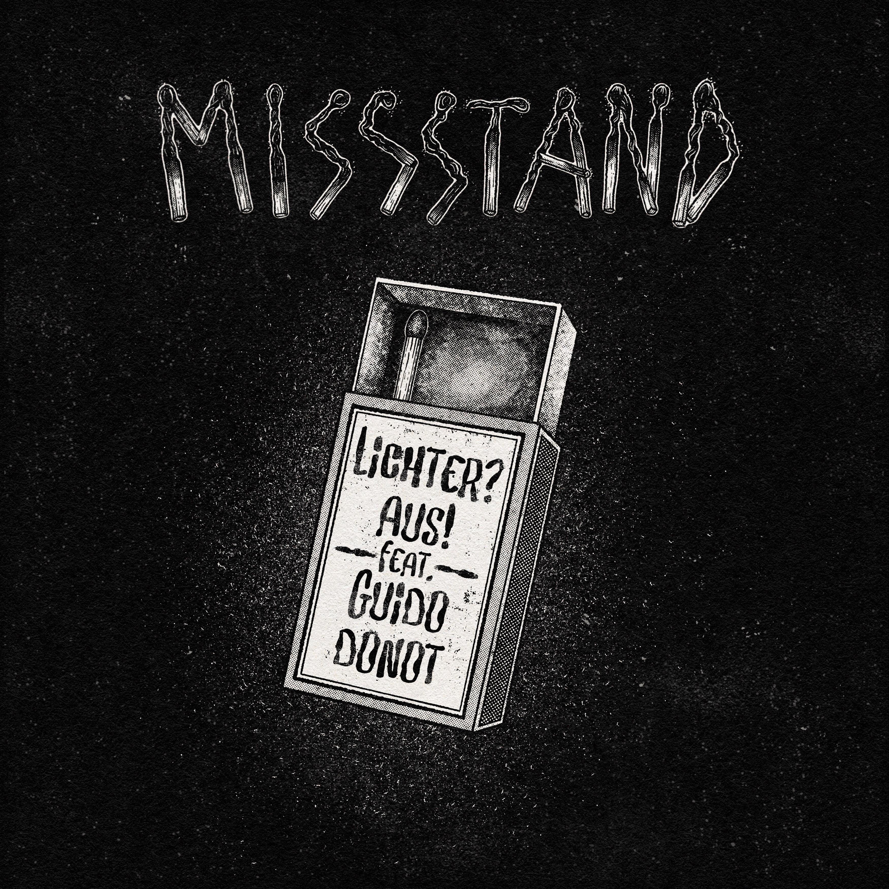

Vorab gehört
MISSSTAND - Lichter? Aus! feat. Guido Donot

Hinweis: Lichter? Aus! erscheint am 3. September 2026. Zum Zeitpunkt dieses Artikels ist die Single noch nicht veröffentlicht; Burg durfte vorher reinhören.

Bei längeren Intros habe ich oft nur einen Gedanken:
Bitte versau das jetzt nicht mit irgendeiner völlig beknackten Stimme.
„Lichter? Aus!“ braucht sage und schreibe 20 Sekunden, bevor überhaupt die erste Silbe kommt.
Gefährliche 20 Sekunden.
Zum Glück wusste ich ungefähr, worauf ich mich einlasse. MISSSTAND sind im RandaleFUNK schließlich kein völlig unbeschriebenes Blatt.
Also eigentlich doch.
Es gab eine schriftliche Review. Zählt das schon als Bekanntschaft?
Egal.
Diese ersten 20 Sekunden hätten mir beinahe schon gereicht. Gitarren, Drums, Aufbau. Kein La-la, kein Hey-ho, kein Tüdelü.
Einfach weitermachen.
hust
Ich höre weiter. Schließlich wollte ich wissen, wie sich Guido Donot in dem Stück schlägt.
Aber zuerst kommt Mani Höfferer mit diesem fein-rostigen Gesang rein, mit dem er seit Jahren jede schöne Melodie zuverlässig versaut.
Ah, nee.
Das war jemand anderes.
Mani schafft es vielmehr, einem guten Song einen unbarmherzigen Mitsingfaktor zu verpassen. Auch hier. Die Melodie sitzt schnell im Kopf, die Füße wackeln unter dem Schreibtisch und ich erwische mich beim Kotzen.
Äh, Kopfnicken.
Unrhythmisch natürlich.
Dann kommt Guido Donot.
In den ersten Sekunden klingt seine Stimme für mich noch fremd. Nicht falsch, nur so deutlich Guido, dass mein Kopf kurz umsortieren muss. Danach fügt sie sich erstaunlich sauber ein, ohne dass MISSSTAND plötzlich wie Begleitpersonal wirken.
Guido erinnert mich dabei immer noch an „Der Tim“ von Scobben beziehungsweise Die Erwins. Hilft vermutlich niemandem außer mir, musste aber raus.
Sein Einsatz wirkt ein bisschen, als hätte jemand den Eiffelturm vors Brandenburger Tor gebaut.
Etwas schräg.
Versteht ihr?
Ach, kommt schon.
Jedenfalls gibt diese zweite Stimme dem Song eine eigene Note, ohne ihn zu übernehmen.
Der Text ist deutlich weniger fröhlich, als meine wackelnden Füße zunächst vermuten lassen. Die Batterien sind leer, der nächste Anstieg ist schon zu viel und selbst die gute alte Zeit könnte rückblickend einfach nur Gewohnheit gewesen sein.
Trotzdem geht es weiter.
Nicht mit „Denk positiv“, Sonnenaufgang und anderer Motivationsposter-Scheiße. MISSSTAND lassen zu, dass Dinge beschissen sind. Die Antwort darauf lautet nicht: Alles wird gut.
Eher:
Vielleicht wird nicht alles gut. Aber heute bleibt niemand allein.
Die Probleme sind dadurch nicht weg. Aber da muss keiner alleine durch.
Reicht manchmal schon.
„Lichter? Aus!“ ist die dritte und letzte Single aus „Smells Like Abgrund“. Das Album folgt am 18.09.2026 über Aggressive Punk Produktionen.
Mir reicht’s jetzt aber auch.
Nicht der Song.
Diese Häppchen.
Nach der dritten Single möchte ich endlich das Album hören.
Ich habe ziemlich schrägen Bock auf „Smells Like Abgrund“.
Mehr von MISSSTAND und zum kommenden Album:
MISSSTAND auf Instagram
„Smells Like Abgrund“ bei Aggressive Punk Produktionen
MISSSTAND im Labelshop